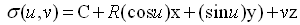
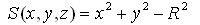
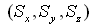
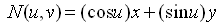

EXPRESS-G diagram
EXPRESS-G diagram| Surface cylindrique | |
| Zylindrische Fläche |
The cylindrical surface is a surface unbounded in the direction of z. Bounded cylindrical surfaces are defined by using a subtype of IfcBoundedSurface with BasisSurface being a cylindrical surface.
NOTE 1 A bounded cylindrical surface can be defined by an IfcRectangularTrimmedSurface with BasisSurface being the cylindrical surface and U1 = 0°, U2 = 360° and V1 = lower bound in z, V2 = upper bound in z (if the plane angle measure is degree). A bounded cylindrical arc surface is provided with |U1 - U2| < 360° (assuming the Usense and Vsense agree to the sense of the basis surface).
NOTE 2 A non-rectangular bounded cylindrical surface, e.g. the surface of a round wall underneath a sloped roof, cab be defined by an IfcCurveBoundedSurface with IfcBoundaryCurve's, being a collection of p-curve segments. A p-curve is curve which lies on the basis of a surface and is defined in the parameter space of that surface.
The inherited attributes are interpreted as
NOTE Definition according to ISO/CD 10303-42:1992
A cylindrical surface is a surface at a constant distance (the radius) from a straight line. A cylindrical surface is defined by its radius and its orientation and location. The data is to be interpreted as follows:C = Position.Location x = Position.P[1] y = Position.P[2] z = Position.P[3] R = Radiusand the surface is parameterized as:

where the parametric range is -∞ < u,v < ∞ .
In the above parameterization the length unit for the unit vectors z is equal to that of the radius R. In the placement coordinate system defined above, the surface is represented by the equation S = 0, where

The positive direction of the normal to the surface at any point on the surface is given by

, or as unit normal by
The direction of the normal is away from the axis of the cylinder.
NOTE Entity adapted from cylindrical_surface defined in ISO 10303-42.
HISTORY New entity in IFC4.
XSD Specification:
<xs:element name="IfcCylindricalSurface" type="ifc:IfcCylindricalSurface" substitutionGroup="ifc:IfcElementarySurface" nillable="true"/>EXPRESS Specification:
| ENTITY IfcCylindricalSurface |
| SUBTYPE OF IfcElementarySurface; |
|
| END_ENTITY; |
Attribute Definitions:
| Radius | : | The radius of the cylindrical surface. |
Inheritance Graph:
| ENTITY IfcCylindricalSurface |
| ENTITY IfcRepresentationItem |
| INVERSE |
|
| ENTITY IfcGeometricRepresentationItem |
| ENTITY IfcSurface |
| DERIVE |
|
| ENTITY IfcElementarySurface |
|
| ENTITY IfcCylindricalSurface |
|
| END_ENTITY; |
 Link to this page
Link to this page